Chapter 15 · 器官系统
肝与胆囊
Liver and Gallbladder · 8 小节 · 12 张切片 · 20 张电镜 · 本地概览 13 张
本章导语
本章把肝作为一座以门管区为支架、以肝小叶为单位的腺体来学：先在被膜、小叶、门管区三个层级上定位，再依次辨认肝细胞索、肝血窦与胆小管三套管道系统，最后用糖原、脂滴、枯否细胞等特殊染色切片验证同一结构的化学性质，并用胆囊与胆总管收束胆汁的贮存与排出通路。
复习重点
- 肝小叶是肝的结构单位，中央静脉居中，门管区位于小叶角部
- 肝细胞索与肝血窦相间排列，窦壁由有孔内皮细胞构成
- 胆小管位于相邻肝细胞之间，是胆汁排出的起始管道
- 门管区含小叶间动脉、小叶间静脉和小叶间胆管
- 枯否细胞属单核吞噬细胞系统，能吞噬台盼蓝等颗粒
- 胆囊黏膜形成皱襞，上皮为单层柱状，无黏膜肌层
易混淆对比
- 肝血窦 vs 胆小管：位置与管腔宽窄：血窦宽大、位于肝细胞索之间并含血细胞；胆小管细窄、位于相邻肝细胞之间
- 小叶间动脉 vs 小叶间静脉：管壁厚薄与管腔形态：动脉壁厚腔小且圆，静脉壁薄腔大而不规则
- 胆囊 vs 小肠：层次差异：胆囊无黏膜肌层与黏膜下层，小肠两者俱全并有绒毛
待核验译名：Bile Canaliculi 有人译作毛细胆管，本内容统一用胆小管；Hepatic Vasculature 一节标题含血管与血流两义，中译取肝的血液循环
阅读提示：本页中文要点为自编复习笔记，不是原站正文的翻译；标本图像为经作者书面许可保存的中分辨率概览，每张本地图像卡片保留 © 署名与原页面链接，“原站本章/原站切片”可查看高倍与结构标注。本站为 Histology Guide 的非官方中文学习改编版，未经其认可或背书。
肝（基本结构）
Liver
- 肝表面覆以致密结缔组织被膜，被膜在门管区增厚并伴随血管进入实质。
- 肝小叶呈多面棱柱体，中央为纵行的中央静脉，肝细胞索向四周放射排列。
- 肝细胞体积大、呈多面体，核圆而居中，胞质嗜酸性，常见双核。
- 门管区位于相邻肝小叶之间，内含小叶间动脉、小叶间静脉和小叶间胆管。
- 相邻肝小叶之间界限不清，需借中央静脉与门管区的位置关系判断。
低倍镜低倍镜先找中央静脉与门管区，确认肝小叶放射状轮廓。
高倍镜高倍镜观察肝细胞索宽度、肝血窦腔隙及肝细胞核形态。
易混提示：动物肝的小叶间结缔组织较发达，切勿把宽阔的结缔组织间隔误认为病变。
相关标本 · 3
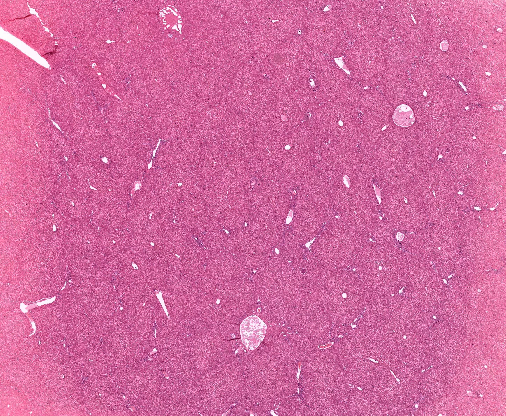
点击图片放大 · 本地概览
MH 126b Liver
肝（人，H&E）
Human
H&E
本地概览
2895×2381
图像 © Histology Guide 及/或原始贡献者 · 非商业教育用途，经许可保存；原页面链接见下方
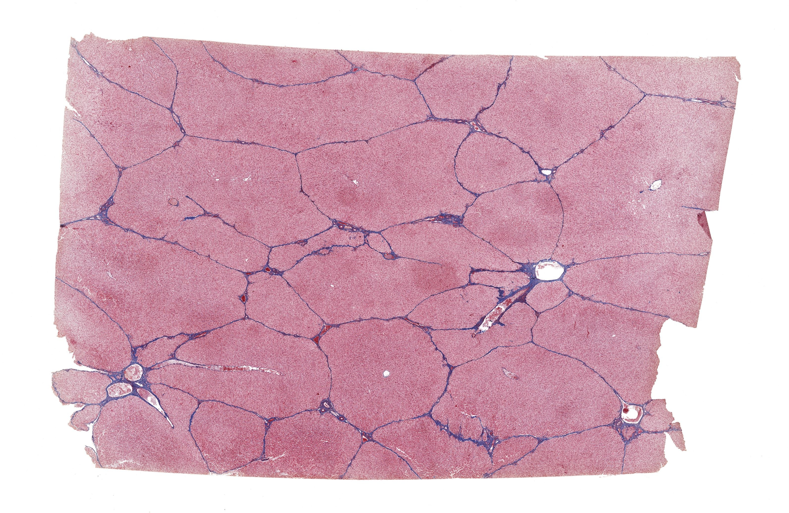
点击图片放大 · 本地概览
UCSF 278 Liver
肝（猪，Azan 三色染色）
Pig
Azan
本地概览
3183×2070
图像 © Histology Guide 及/或原始贡献者 · 非商业教育用途，经许可保存；原页面链接见下方
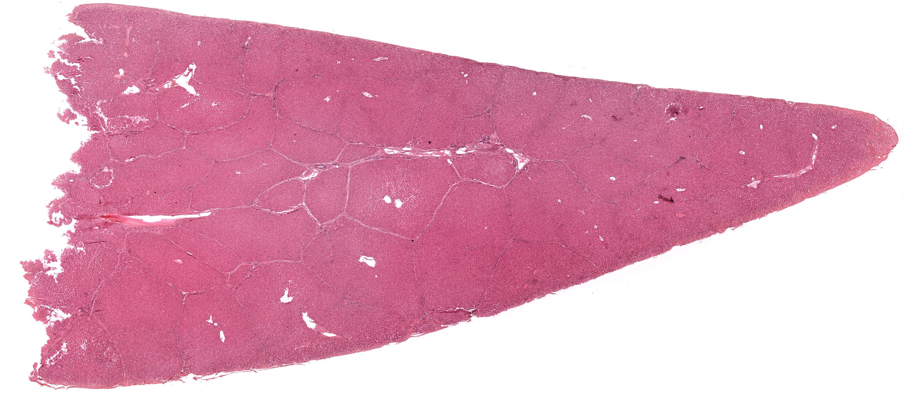
点击图片放大 · 本地概览
MHS 206 Liver
肝小叶（猪，H&E）
Pig
H&E
本地概览
4191×1894
图像 © Histology Guide 及/或原始贡献者 · 非商业教育用途，经许可保存；原页面链接见下方
胆小管
Bile Canaliculi
- 胆小管是相邻肝细胞局部质膜凹陷围成的细管，管壁即肝细胞膜。
- 胆小管在肝细胞索内互相吻合，汇入小叶边缘的赫令管后离开小叶。
- 常规切片中胆小管难以辨认，需用 ATP 酶或银染等方法显示。
- 胆小管与肝血窦之间隔以肝细胞，胆汁不会直接进入血液。
低倍镜低倍镜在肝细胞索中轴寻找细线状显色带，判断其走向。
高倍镜高倍镜沿肝细胞间隙追踪沉淀线，确认其位于细胞之间。
易混提示：胆小管显色线细窄且位于细胞之间；肝血窦是较宽的腔隙，二者不要混。
相关标本 · 2
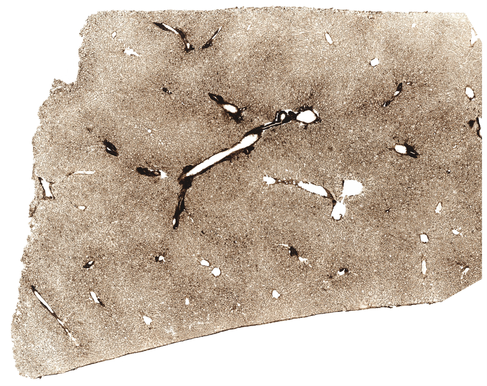
点击图片放大 · 本地概览
MHS 249 Liver
胆小管（ATP 酶-磷酸铅法）
Bile Canaliculi
ATPase/Lead Phosphate
本地概览
4665×3700
图像 © Histology Guide 及/或原始贡献者 · 非商业教育用途，经许可保存；原页面链接见下方
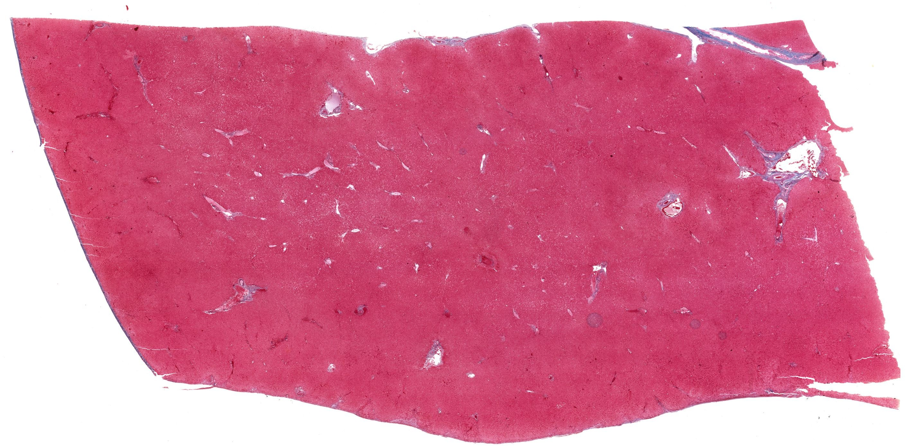
点击图片放大 · 本地概览
MH 127 Liver
胆小管（Azan 三色染色）
Bile Canaliculi
Azan
本地概览
2819×1387
图像 © Histology Guide 及/或原始贡献者 · 非商业教育用途，经许可保存；原页面链接见下方
电镜照片 2 张（在线查看）
肝巨噬细胞（枯否细胞）
Kupffer Cells
- 枯否细胞是定居于肝血窦内的巨噬细胞，属单核吞噬细胞系统。
- 细胞体积大、形态不规则，常以突起附着于内皮细胞表面。
- 活体注射台盼蓝后，颗粒被枯否细胞吞噬，胞质内出现蓝色颗粒。
- 枯否细胞能清除血液中的异物、衰老红细胞与内毒素。
低倍镜低倍镜在肝血窦腔内寻找含蓝色颗粒或胞体较大的细胞。
高倍镜高倍镜确认颗粒位于窦壁细胞胞质内，而非肝细胞内。
易混提示：内皮细胞胞核扁平、染色深；枯否细胞胞体大而形态不规则，可依此区分。
相关标本 · 1
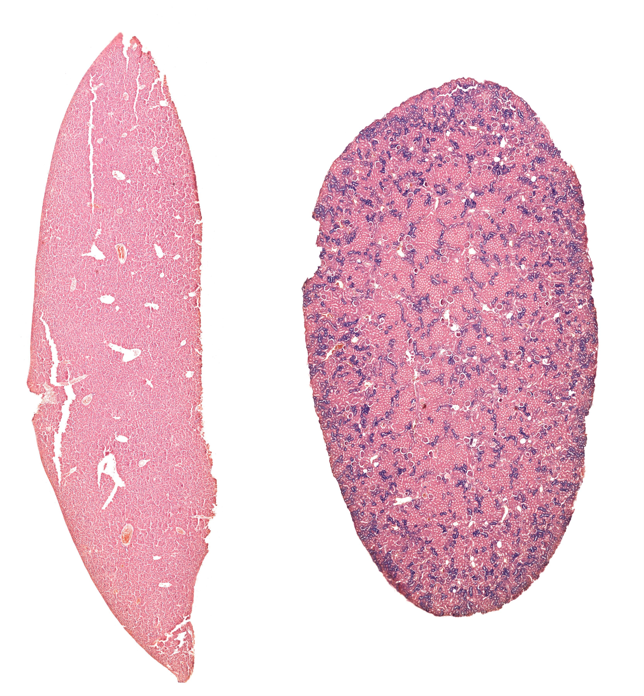
点击图片放大 · 本地概览
MH 031 Liver
枯否细胞（台盼蓝活体染色）
Kupffer Cells
Trypan Blue Uptake
本地概览
3329×3596
图像 © Histology Guide 及/或原始贡献者 · 非商业教育用途，经许可保存；原页面链接见下方
肝的血液循环
Hepatic Vasculature
- 肝接受门静脉与肝动脉双重血供，两条血管在门管区内并行。
- 门静脉分支为小叶间静脉，肝动脉分支为小叶间动脉，血液均流入肝血窦。
- 肝血窦的血液汇入中央静脉，再经小叶下静脉合成肝静脉出肝。
- 墨汁灌注切片中血管腔被黑色灌注物充盈，可据此追踪血流路径。
低倍镜低倍镜先找门管区内成组的血管断面，观察管壁与管腔差异。
高倍镜高倍镜比较管壁厚薄与管腔大小，确认小叶间动脉与静脉。
易混提示：小叶间动脉管壁较厚而腔小；小叶间静脉壁薄、腔大且形态不规则。
相关标本 · 1
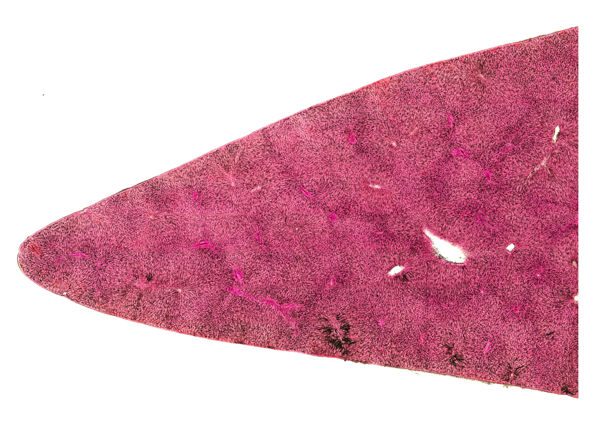
点击图片放大 · 本地概览
UCSF 286 Liver
肝血管（墨汁灌注）
Ink Injection
本地概览
3826×2708
图像 © Histology Guide 及/或原始贡献者 · 非商业教育用途，经许可保存；原页面链接见下方
肝糖原
Liver - Glycogen
- 肝糖原是肝细胞储存糖类的形式，餐后合成，饥饿时分解为葡萄糖入血。
- PAS 反应使糖原呈紫红色，颗粒状或团块状分布于肝细胞胞质内。
- 糖原在制片过程中易溶于水而流失，故胞质常呈不规则空泡状。
- 不同功能状态下肝细胞糖原含量差别明显，切片中分布可不均匀。
低倍镜低倍镜比较各区域肝细胞染色深浅，寻找紫红色反应区。
高倍镜高倍镜确认紫红色颗粒位于肝细胞胞质内，核可被挤向一侧。
易混提示：糖原溶解形成的空泡与脂滴空泡形态相近，须结合染色方法判断。
相关标本 · 1
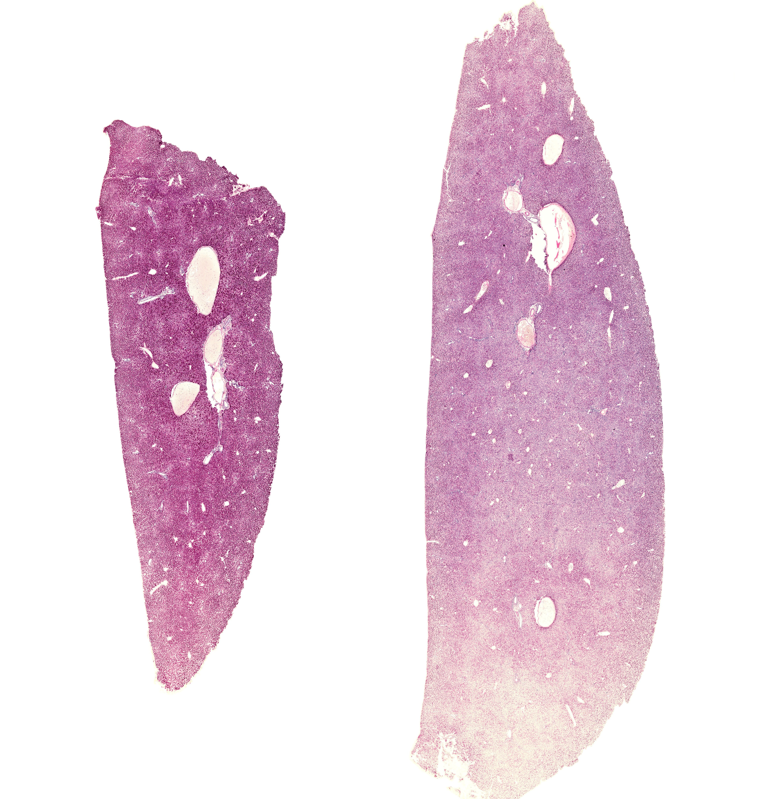
点击图片放大 · 本地概览
MH 128 Liver
肝糖原（PAS 反应）
Glycogen
Periodic-Acid Schiff Stain
本地概览
3875×4049
图像 © Histology Guide 及/或原始贡献者 · 非商业教育用途，经许可保存；原页面链接见下方
肝脂滴
Liver - Lipids
- 肝细胞参与脂类代谢，脂滴以大小不等的圆球形式暂存于胞质。
- 锇酸与不饱和脂肪酸结合呈黑色，使脂滴在切片中清晰显影。
- 常规制片中脂滴被溶剂溶解，留下圆形空泡，核常被挤向细胞边缘。
- 脂滴蓄积过多时肝细胞体积增大，是脂肪肝的形态学基础。
低倍镜低倍镜观察肝细胞索内黑色或空泡状的圆形结构分布。
高倍镜高倍镜确认脂滴边界圆滑、大小不一，多位于核旁或细胞中央。
易混提示：脂滴空泡圆而边界清晰；糖原溶解形成的空泡边界模糊且形态不整。
相关标本 · 1
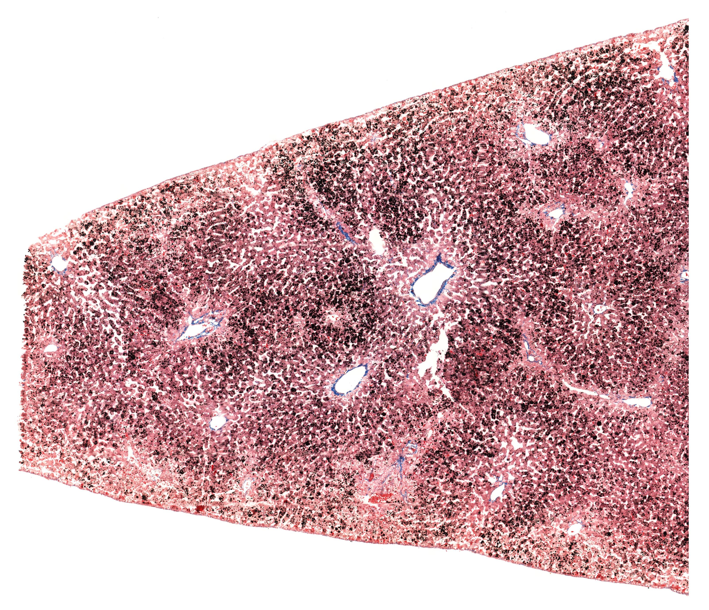
点击图片放大 · 本地概览
UCSF 280 Liver
肝脂滴（锇酸染色）
Lipids
Osmic Acid/Mallory Azan
本地概览
3203×2760
图像 © Histology Guide 及/或原始贡献者 · 非商业教育用途，经许可保存；原页面链接见下方
胎儿肝（造血）
Liver Fetal
- 胚胎期肝是主要造血器官，肝细胞索之间可见大量造血细胞团。
- 胎儿肝小叶结构不典型，中央静脉细小，门管区结缔组织较少。
- 造血细胞体积小、核染色深，密集分布于肝细胞索与血窦之间。
- 出生后造血功能逐渐由骨髓取代，肝小叶结构随之趋于清晰。
低倍镜低倍镜观察肝实质内成团的深染小细胞，判断造血灶分布。
高倍镜高倍镜区分体积大的肝细胞与体积小的各系造血细胞。
易混提示：胎儿肝造血细胞密集，切勿误认为炎性细胞浸润或肿瘤细胞。
相关标本 · 1
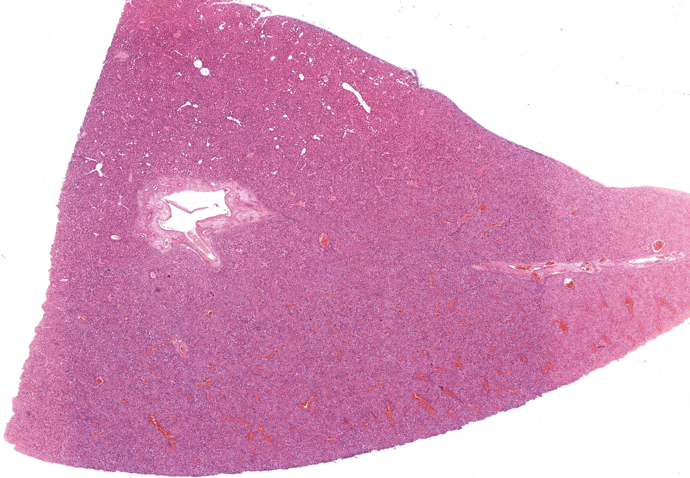
点击图片放大 · 本地概览
MH 125 Liver Fetal
胎儿肝（造血期）
H&E
本地概览
3480×2409
图像 © Histology Guide 及/或原始贡献者 · 非商业教育用途，经许可保存；原页面链接见下方
胆囊与胆总管
Gallbladder
- 胆囊壁由黏膜、肌层和外膜构成，无黏膜肌层，也无黏膜下层。
- 黏膜上皮为单层柱状，固有层富含血管，皱襞使腔面呈网状。
- 胆囊收缩时皱襞高而密集，扩张时皱襞展平，上皮高度也随之改变。
- 胆囊能吸收胆汁中的水分与电解质，使胆汁浓缩。
- 胆总管管壁含环行平滑肌，黏膜上皮同为单层柱状。
低倍镜低倍镜观察囊壁层次与皱襞形态，确认肌层厚度。
高倍镜高倍镜确认上皮为单层柱状，固有层内无腺体与黏膜肌层。
易混提示：胆囊无黏膜肌层，这是与消化管其他部位鉴别时最关键的层次差异。
相关标本 · 2
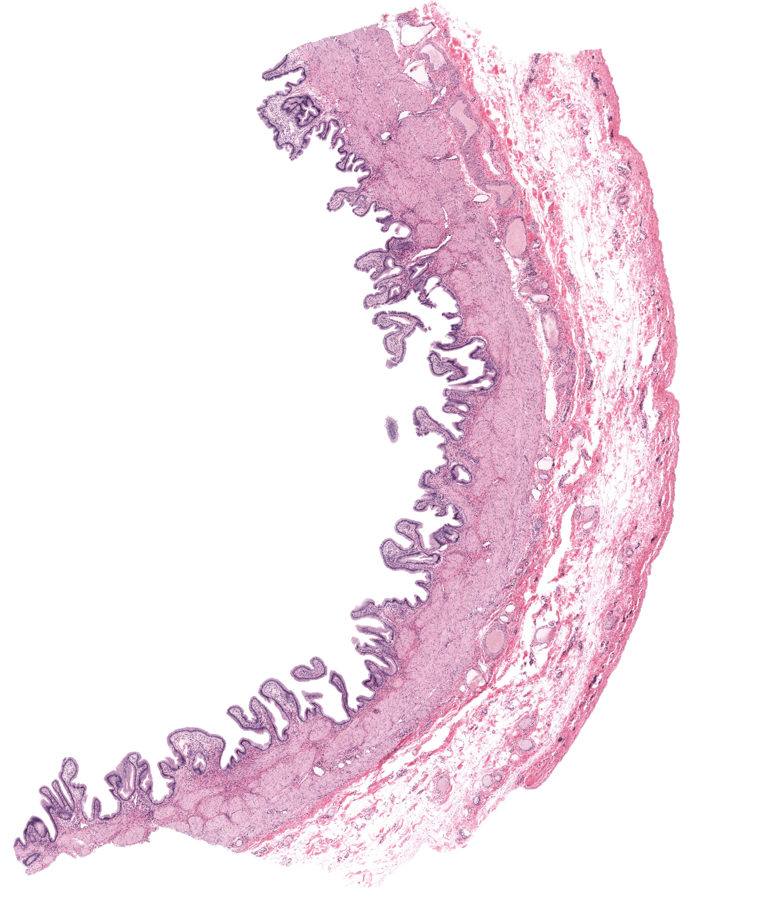
点击图片放大 · 本地概览
MH 130a Gallbladder
胆囊（H&E）
H&E
本地概览
4122×4804
图像 © Histology Guide 及/或原始贡献者 · 非商业教育用途，经许可保存；原页面链接见下方
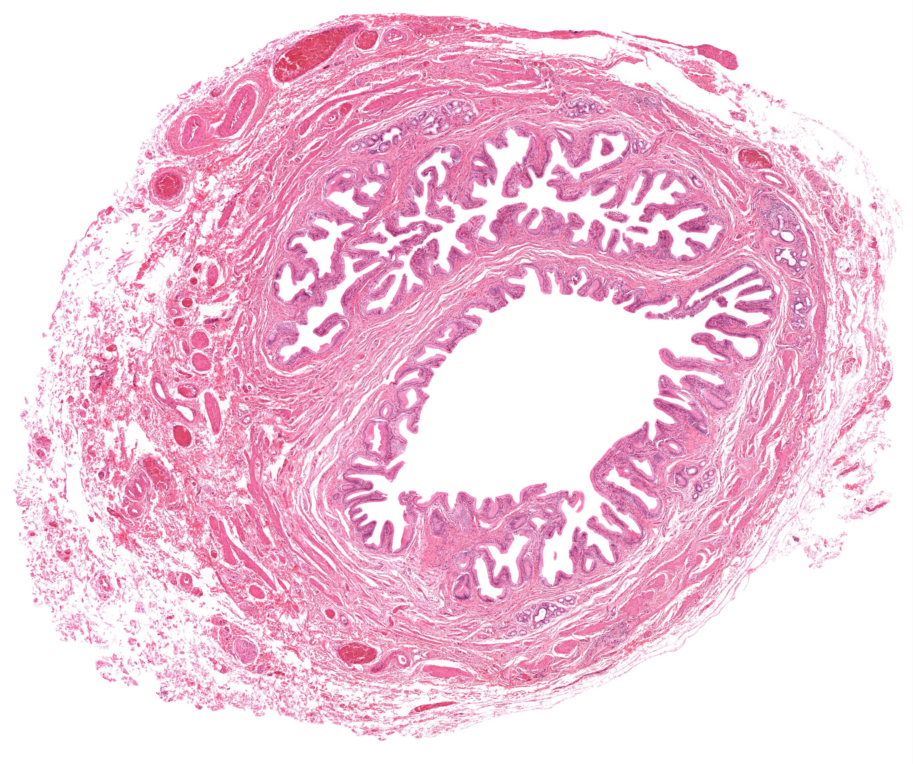
点击图片放大 · 本地概览
MHS 261 Common Bile Duct
胆总管（H&E）
H&E
本地概览
3045×2551
图像 © Histology Guide 及/或原始贡献者 · 非商业教育用途，经许可保存；原页面链接见下方
本章其他图谱
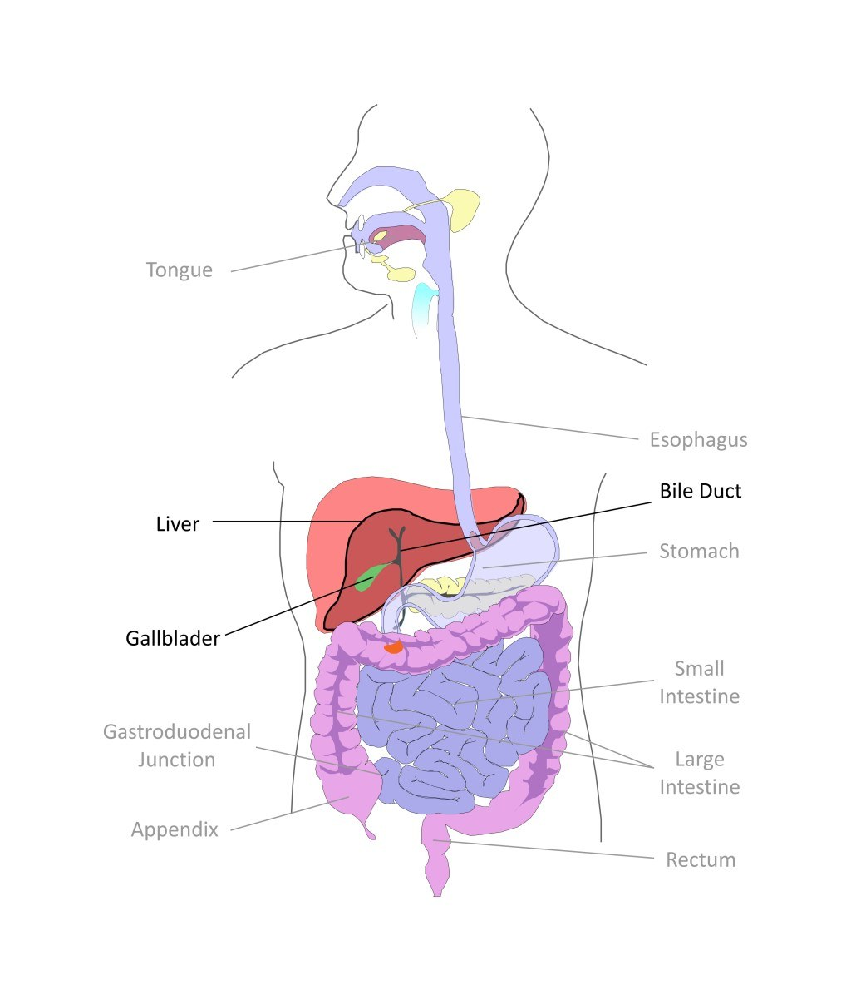
点击图片放大 · 本地概览
Fig 004 Liver and Gallbladder
（中文名待编写）
本地概览
1024×1202
图像 © Histology Guide 及/或原始贡献者 · 非商业教育用途，经许可保存；原页面链接见下方
本章电镜照片
18 张 · 需在线查看
电镜照片 18 张（在线查看）
自测
9 题 · 自编
先自己回答，再点“显示答案”。标记为易错的项目会进入复习模式。
肝小叶中央纵行的血管是什么？
识别
中央静脉，肝血窦的血液汇入其中后经小叶下静脉出肝。
门管区内通常可见哪三种管道？
概念
小叶间动脉、小叶间静脉和小叶间胆管，三者伴行于小叶间结缔组织内。
胆小管由什么结构围成？
概念
由相邻肝细胞局部的质膜凹陷围成，管壁就是肝细胞膜本身。
台盼蓝活体染色切片中的蓝色颗粒出现在哪种细胞内？
识别
肝血窦内的枯否细胞，即肝巨噬细胞，其吞噬功能使颗粒在胞质内聚集。
PAS 反应显示肝糖原时阳性部位呈什么颜色？
识别
呈紫红色，以颗粒状或团块状分布于肝细胞胞质内。
肝脂滴在锇酸染色切片中呈何种表现？
识别
呈大小不一的黑色圆球，位于肝细胞胞质内或核旁。
胆囊壁与小肠壁在层次上最关键的区别是什么？
对比
胆囊没有黏膜肌层和黏膜下层，小肠两者都有，并具有绒毛结构。
如何区分肝血窦与胆小管？
对比
肝血窦腔宽、位于肝细胞索之间并可见血细胞；胆小管细窄、位于相邻肝细胞之间。
胎儿肝切片中密集的深染小细胞是什么？
识别
各系造血细胞，说明肝在胚胎期承担造血功能，出生后由骨髓取代。